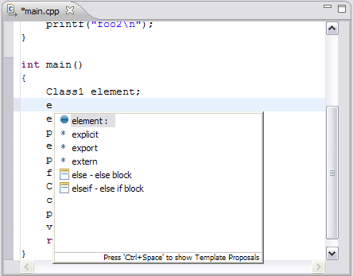

Remote Content Assist
Use Content Assist to insert C/C++ elements of your project, and templates into your code. You can insert a template into your source code rather than retyping
commonly-used snippets of code.
Content Assist uses the index to generate content proposals. To create an index for the project, right click on the project in the Project
Explorer. Select Index > Rebuild.

To insert a template or element:
- In the Remote C/C++ editor, type at least the first letter of a template or
element then Ctrl+Space.
A list displays the elements, followed by keywords and templates
 that start with the letter combination you typed.
that start with the letter combination you typed.

- Do one of the following:
- Continue typing. The list shortens. When there is only one item in the
list, it is automatically inserted.
- Double-click an item in the list to insert it into your code.
- Press Esc to close the Content Assist Window.
- Content Assist is also activated by other triggers. For example, select element from the list of
proposals in Step 1 and type . immediately after. Content Assist displays a list of the members of element.

To set Content Assist preferences:
- Click Window > Preferences.
- Expand C/C++, and click C/C++ Editor.
- Click the Content Assist tab.

- Do the following:
- To insert an element when you open Content Assist and it is the only
item in the list, select the Insert single proposals automatically check box.
- To automatically insert the common prefix of all possible completions similar to Unix shell expansion,
select the Insert common prefixes automatically check box. This can be used repeatedly, even while the code assist window is being displayed.
- To display proposals in alphabetical order, rather than by relevance, select the Present proposals in alphabetical order checkbox.
- To change the amount of time Content Assist is permitted to parse proposals enter the value for Content Assist parsing timeout in the text box area.
- Enable Auto activation of content assist for ".", "->" or "::" triggers by selecting the appropriate checkboxes.
- To change the delay before Content Assist is automatically invoked for the triggers (shown above), enter the new delay in the Auto activation delay text box area.
- Click OK.
For more information on using Content Assist in the editor, see C/C++ Development User Guide
> Tasks > Working with Content Assist > Using Content Assist.